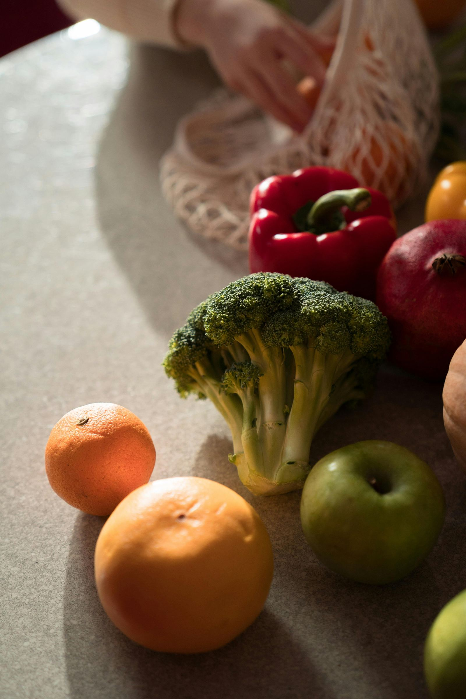

Gut health is one of those things that's easy to take for granted — especially when everything seems to be functioning well enough. But the truth is, what's happening in your digestive system has a reach far beyond your stomach. The microbiome — all the bacteria, viruses, and fungi living in your gut, primarily your large intestine — is one of the most complex ecosystems in the body, and it's working on your behalf every single day.
Most people carry hundreds of different microbial species in their gut, and that diversity matters. A rich, varied microbiome is associated with better digestion and nutrient absorption, a more regulated immune system, reduced inflammation, and even better brain health. When that diversity is diminished — through poor diet, stress, disrupted sleep, or inactivity — the effects ripple outward in ways that aren't always obvious. Mood shifts. Energy dips. Immunity weakens. The connection is real, even when it's invisible.
The good news is that your gut is remarkably responsive. Small, consistent changes make a genuine difference. Here are five that I keep coming back to.
Your gut is one of the most complex ecosystems in the body — and it's working on your behalf every single day.
-
Feed It More Fiber
Fiber is food for the good bacteria in your gut — what's often called a prebiotic. When your microbiome has enough of it, those bacteria flourish, and they return the favour: less bloating, better digestion, reduced inflammation, and a colon that stays healthy and regular. A fiber-rich diet has also been associated with lower risk of gastrointestinal conditions including constipation and Crohn's disease.
Most of us don't get nearly enough. The daily recommendation sits between 21 and 38 grams, and it's easier to reach than it sounds. Legumes, whole grains, avocados, sweet potatoes, berries, leafy greens, nuts and seeds — these aren't dramatic dietary overhauls. They're just small, regular additions to meals you're already making. -
Drink More Water Than You Think You Need
Water is critical to every stage of digestion. It helps your body absorb and transport nutrients, maintains the mucus lining that protects your digestive tract, and keeps things moving — literally. When you're dehydrated, the gut microbiota changes, becoming less abundant and less diverse. The signs of not drinking enough aren't always thirst: headache, dry mouth, dizziness, fatigue, and infrequent urination are all quiet signals your body sends before it starts asking loudly.
Aim for around four to six cups a day as a starting point, and more on days when you're active or it's warm. If plain water feels like a chore, herbal teas and water-rich foods count too.

What you eat is what your gut has to work with — make it colourful.
-
Move Your Body — Consistently
The relationship between exercise and gut health is more direct than most people realise. Research shows that 150 to 270 minutes of moderate to high-intensity movement per week — particularly a combination of aerobic exercise and resistance training — has a measurable positive effect on gut microbiota diversity. People who are sedentary tend to have a less varied microbiome than those who are regularly active, and the encouraging part is that this can change. You don't need to have always been active for movement to start improving your gut health now.
It doesn't have to be intense or structured. Walks, dancing, yoga, swimming — what matters most is that it's consistent and that you actually enjoy it.
Movement doesn't have to be intense to be meaningful — it just has to be yours.
-
Take Your Stress Seriously
The gut-brain connection is not a metaphor. When stress spikes cortisol and adrenaline, the gut feels it directly — as cramping, diarrhea, constipation, heartburn, or stomach pain. It's why we get butterflies before something high-stakes, or feel nauseous when we're anxious. The gut and brain are in constant communication, and chronic stress chronically disrupts that conversation.
You can't eliminate stress entirely, but you can build a relationship with it. Belly breathing, meditation, time in nature, slow mornings, even a cup of tea taken without a screen — these aren't small things. They are the things that keep your nervous system regulated, and your gut along with it. -
Protect Your Sleep
There is emerging evidence that certain bacteria in the gut may directly influence sleep quality — affecting how easily you fall asleep, how often you wake, and how long you stay under. The relationship goes both ways: poor sleep disrupts the microbiome, and a disrupted microbiome can make good sleep harder to come by.
Most adults need between seven and nine hours. If you're consistently falling short, the path back usually runs through the other four things on this list — more movement during the day, better stress management in the evening, and a gut that isn't working overtime to compensate for a diet it's struggling with. It all connects.
Your gut is already doing its best for you
None of this has to happen all at once. Pick one thing — more fiber, more water, a walk in the afternoon — and let that be enough for now. Your gut is remarkably forgiving, and it will respond. The goal isn't perfection. It's a little more care, a little more often, until it becomes the way you simply live.